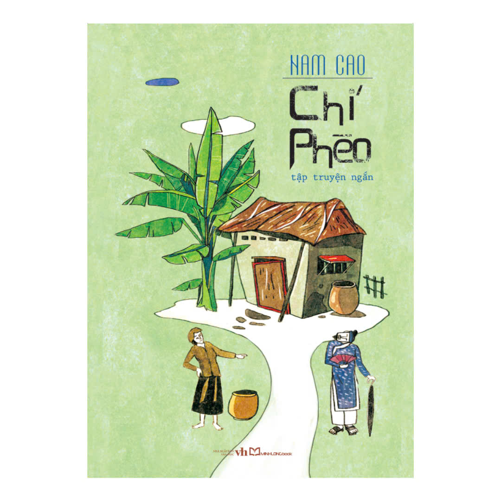
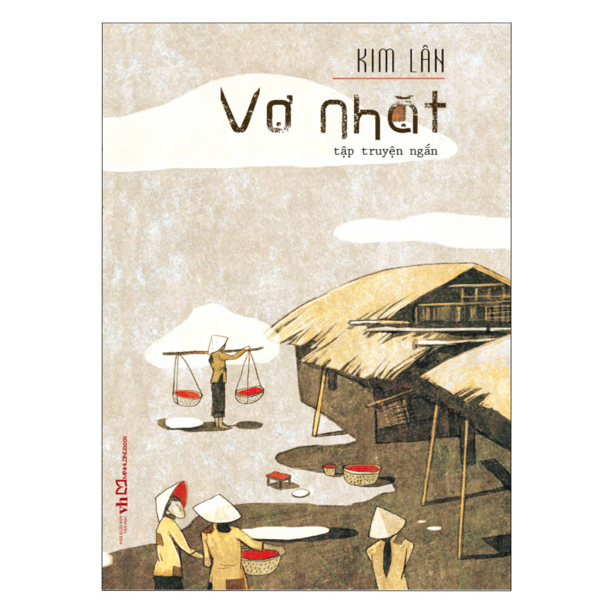
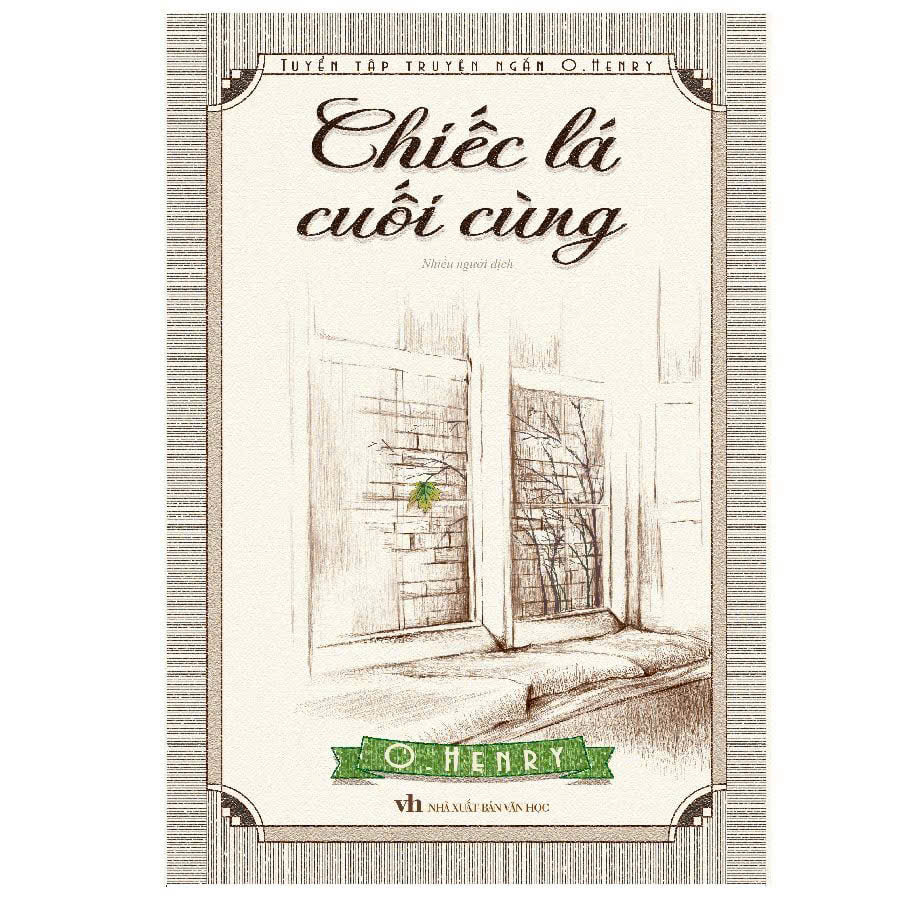
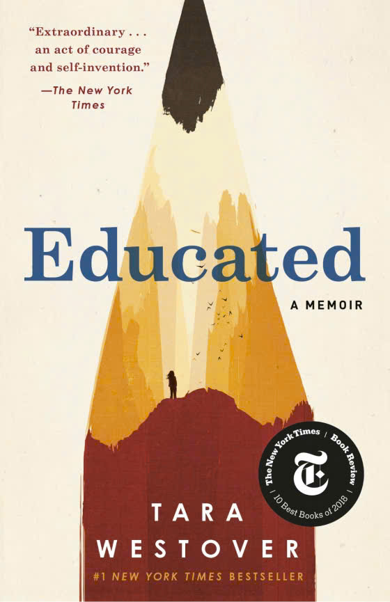
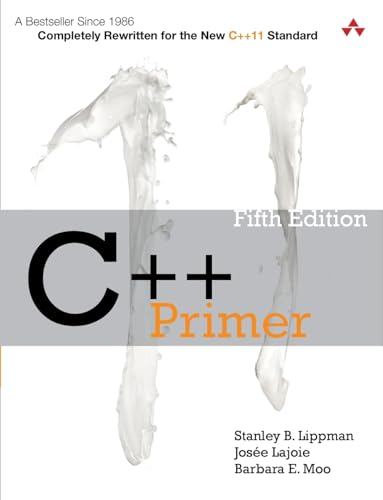
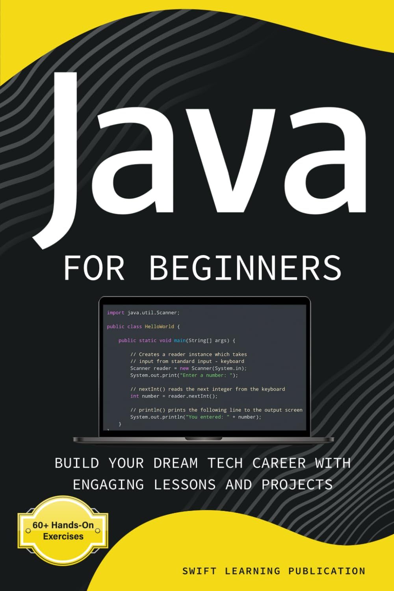
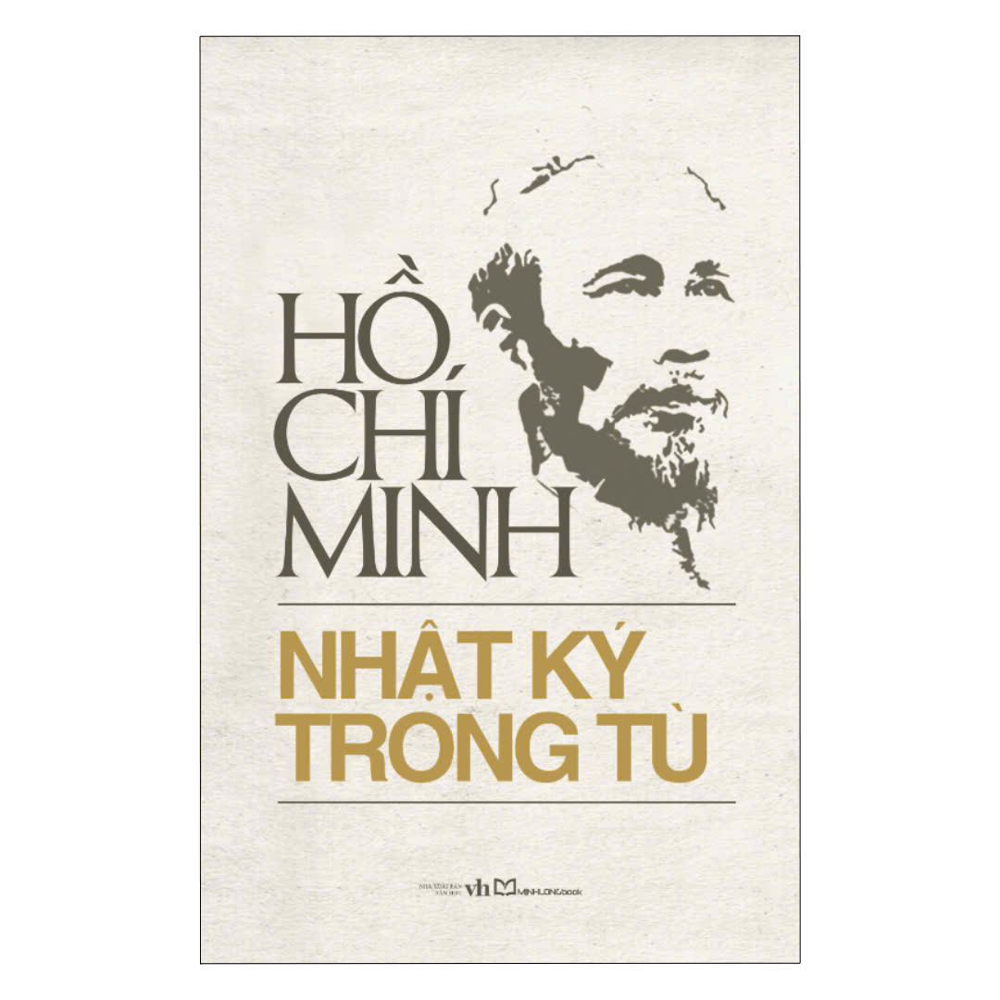
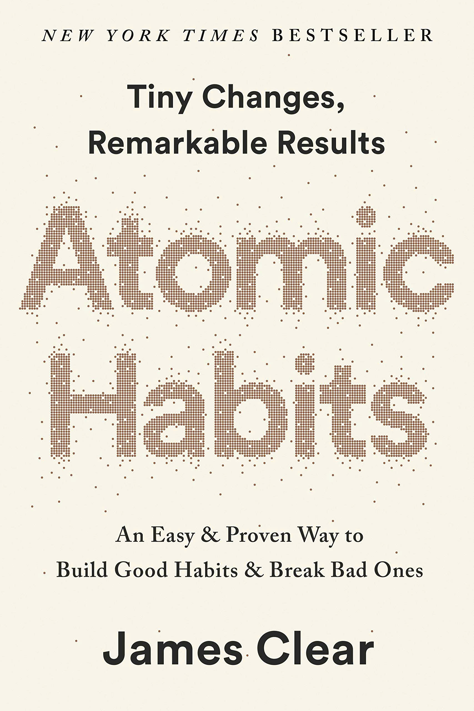
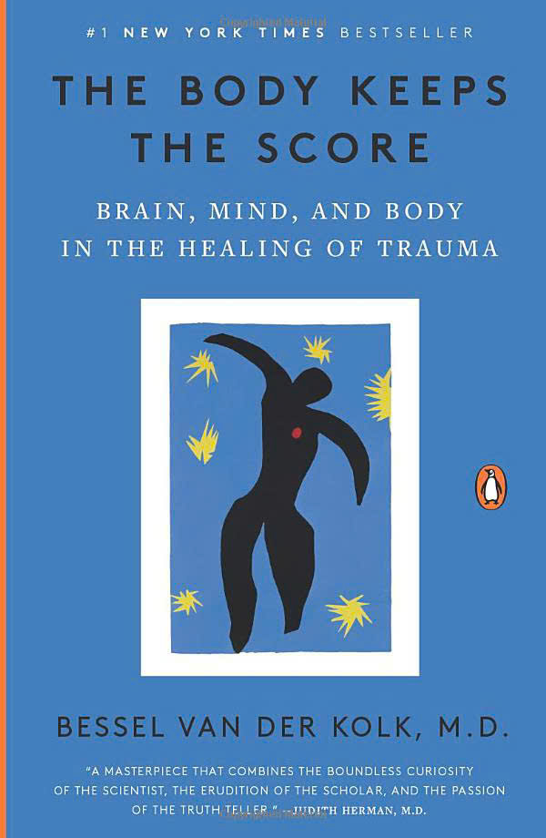
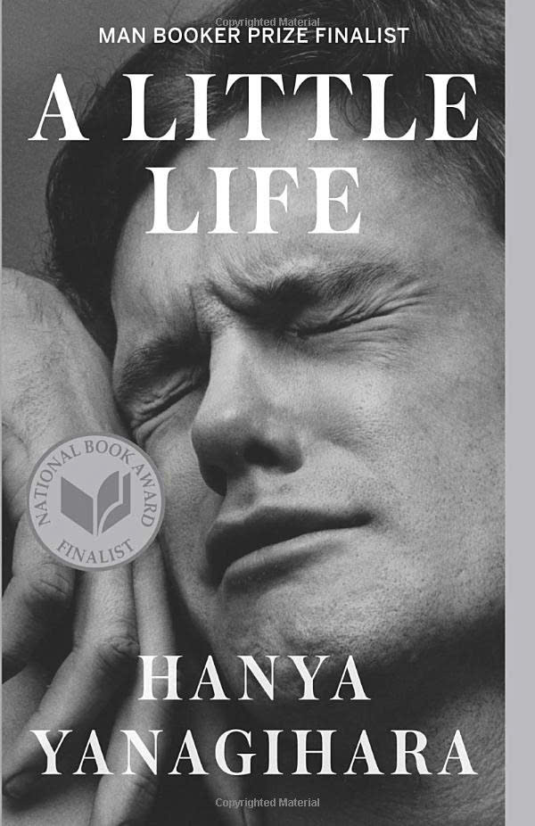

☰ Trang chủ
Xin chào, admin2
Đăng xuất
Quản lý sách





| Mã sách | Thể loại | Tên sách | Tác giả | Ảnh bìa | Nhà XB | Số lượng | Tình trạng | Giá | Mô tả | Thao tác |
|---|---|---|---|---|---|---|---|---|---|---|
| 1 | lập trình | C++ Cơ Bản | Stanley B.Lippman,Josée Lajoie,Barbara E.Moo |  |
Addison-Wesley Professional. | 10 | Còn hàng | 160.000 | Cuốn sách cung cấp đầy đủ kiến thức về ngôn ngữ lập trình C++ từ cơ bản đến nâng cao, giúp người học nắm vững cú pháp, lập trình hướng đối tượng và cách xây dựng các chương trình thực tế. Phù hợp với sinh viên ngành Công nghệ thông tin và người mới bắt đầu học lập trình. | |
| 2 | lập trình | Java Cơ Bản | Swift Learning Publication |  |
Swift Learning Publication | 12 | Còn hàng | 400.000 | Sách giới thiệu các kiến thức nền tảng của ngôn ngữ Java như lớp, đối tượng, kế thừa, đa hình, xử lý ngoại lệ và kết nối cơ sở dữ liệu. Có nhiều ví dụ minh họa và bài tập thực hành giúp người học dễ tiếp cận. | |
| 3 | Lập trình | HTML và CSS | Jürgen Wolf |  |
Rheinwerk Computing | 15 | Còn hàng | 250.000 | Tài liệu hướng dẫn lập trình Python từ cơ bản đến nâng cao với nhiều ví dụ thực tế về xử lý dữ liệu, lập trình hướng đối tượng và xây dựng ứng dụng.Phù hợp cho sinh viên và người tự học. | |
| 4 | Tạp chí | Khoa Học Xã Hội và Xã Hội Nhân Văn | Nguyễn Khánh Toàn |  |
Nhà Xuất Bản khoa học Xã Hội | 8 | Còn hàng | 180.000 | Khoa học xã hội và nhân văn” là tuyển tập các bài nghiên cứu tiêu biểu của Giáo sư Nguyễn Khánh Toàn về giáo dục, lịch sử, văn hóa và khoa học xã hội. Cuốn sách phân tích vai trò của khoa học xã hội và nhân văn trong sự phát triển đất nước, đồng thời làm rõ tư tưởng Hồ Chí Minh, truyền thống dân tộc và sự nghiệp giáo dục. Tác phẩm cũng nhấn mạnh tầm quan trọng của việc đào tạo con người, phát triển tri thức và vận dụng các giá trị khoa học xã hội vào thực tiễn xây dựng và bảo vệ Tổ quốc. Tuyển tập gồm ba phần chính: Bác Hồ của chúng ta, Cách mạng và khoa học xã hội, và Sự nghiệp trồng người. | |
| 5 | Tạp chí | Tạp chí Khoa học và công nghệ | Viện khoa học |  |
Nhà Xuất Bản Khoa học và Công nghệ | 9 | Còn hàng | 110.000 | Tạp chí Khoa học & Công nghệ là ấn phẩm khoa học đăng tải các bài báo nghiên cứu, kết quả thực nghiệm và ứng dụng công nghệ trong nhiều lĩnh vực như cơ khí, điện – điện tử, công nghệ thông tin, tự động hóa và môi trường. Tạp chí góp phần chia sẻ tri thức, thúc đẩy nghiên cứu khoa học, đổi mới sáng tạo và nâng cao chất lượng đào tạo, phục vụ sự phát triển của xã hội. | |
| 6 | Tạp chí | Tạp chí Giáo dục | Bộ Giáo Dục |  |
Roberts | 10 | Còn hàng | 350000 | Tạp chí Giáo dục là tạp chí khoa học chuyên ngành giáo dục, đăng tải các công trình nghiên cứu, bài viết trao đổi học thuật và kết quả ứng dụng trong lĩnh vực giáo dục và đào tạo. Nội dung bao gồm các vấn đề về đổi mới phương pháp dạy học, quản lý giáo dục, ứng dụng công nghệ thông tin trong giáo dục, kiểm tra – đánh giá, phát triển chương trình đào tạo và các nghiên cứu nhằm nâng cao chất lượng giáo dục ở Việt Nam. | |
| 7 | Tạp chí | Tạp chí Giáo dục | Bộ Giáo Dục | |
Nhà xuất bản: Giáo Dục Việt Nam | 15 | Còn hàng | 50.000 | Tắt đèn của Ngô Tất Tố phản ánh chân thực cuộc sống khốn khổ của người nông dân Việt Nam dưới chế độ thực dân phong kiến. Tác phẩm xoay quanh gia đình chị Dậu phải chịu sưu thuế nặng nề, áp bức và bất công. Qua hình ảnh chị Dậu giàu lòng yêu thương, kiên cường và dũng cảm chống lại cường quyền, tác phẩm lên án xã hội tàn bạo, đồng thời bày tỏ niềm cảm thông sâu sắc đối với số phận của người nông dân. | |
| 8 | Văn học | Nhật ký trong tù | Hồ Chí Mình |  |
Nhà Xuất bản: văn Học | 10 | Còn hàng | 80.000 | Nhật ký trong tù là tập thơ của Chủ tịch Hồ Chí Minh, được sáng tác trong thời gian Người bị giam giữ tại các nhà tù ở Trung Quốc (1942–1943). Qua những bài thơ ngắn gọn, tác phẩm phản ánh cuộc sống khắc nghiệt trong lao tù, đồng thời thể hiện tinh thần lạc quan, ý chí kiên cường, lòng yêu nước và khát vọng tự do. Đây là một tác phẩm có giá trị lớn về cả văn học và lịch sử. | |
| 14 | Ngoại văn | Atomis Habits | James Clear |  |
Penguin Young Readers | 10 | Còn hàng | 568.000 | Atomic Habits là cuốn sách của James Clear hướng dẫn cách xây dựng thói quen tốt và loại bỏ thói quen xấu thông qua những thay đổi nhỏ mỗi ngày. Nội dung nhấn mạnh rằng những cải thiện nhỏ nhưng được duy trì đều đặn sẽ tạo nên kết quả lớn và bền vững theo thời gian. | |
| 15 | Ngoại văn | The Body Keeps The Score | James Clear |  |
Bessel van der Kolk M.D. | 15 | Còn hàng | 455.000 | The Body Keeps the Score là cuốn sách của Bessel van der Kolk, một bác sĩ tâm thần và chuyên gia hàng đầu về sang chấn tâm lý. Cuốn sách trình bày cách chấn thương tâm lý ảnh hưởng đến não bộ, cơ thể và cảm xúc, đồng thời giới thiệu các phương pháp giúp con người chữa lành và phục hồi sức khỏe tinh thần | |
| 16 | Ngoại văn | A Little Life | Hanya Yanangihara |  |
Anchor Books | 10 | Còn hàng | 320.000 | A Little Life (Một Đời Nhỏ Bé) là tiểu thuyết của Hanya Yanagihara kể về tình bạn, tình yêu và những tổn thương sâu sắc của bốn người bạn tại New York. Cuốn sách khắc họa hành trình vượt qua đau khổ, mất mát và tìm kiếm ý nghĩa của cuộc sống bằng lối kể chuyện đầy cảm xúc. |